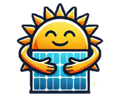

MSc Business Analytics · BSc Aerospace Engineering · Data Analytics & ML
📍 Lisbon, Portugal
I'm a former high-performance judo athlete. A sport that shaped how I approach every challenge: with discipline, adaptability, and a drive to keep improving. That same mindset led me from a Bachelor's in Applied Mathematics, through a Bachelor's in Aerospace Engineering at Instituto Superior Técnico, and a year as a trainee at Lisbon Airport, to a Master's in Business Analytics at Nova SBE.
I'm drawn to complex systems and the kind of problems where data can genuinely change how decisions are made. Whether that's forecasting patient demand in a resource-limited hospital, detecting solar panels from satellite imagery, or building models that hold up under real conditions.
Whether it's cleaning the messy data, building ETL pipelines, to training machine learning models and designing analytical frameworks, I care about solutions that work beyond the notebook. Currently looking to grow in data analytics, data science, or data engineering, in environments that value rigour, ambition, and curiosity.

Open to new opportunities, interesting projects, and conversations about data, impact, and everything in between.